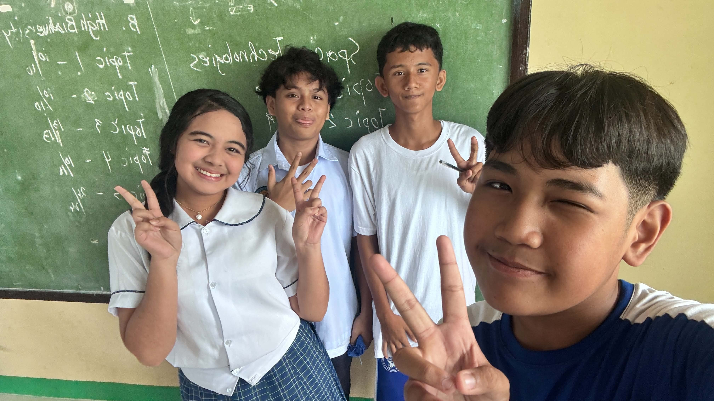

Wonders of Nasugbu, Batangas 🌊Exploring the Historical, Cultural, and Natural Landmarks of Nasugbu |
Welcome to Nasugbu!Located in the northwestern part of Batangas, Nasugbu is famous for its breathtaking mountain peaks, historic chapels, scenic coves, and rich heritage. Use this website to explore the iconic landmarks that make Nasugbu special. 📸 Our Group Photo Caption: Our research group behind the Nasugbu Landmarks project. |
🗺️ Famous Landmarks in NasugbuScroll down to explore six must-see natural and cultural landmarks found in Nasugbu, Batangas:
|
🌟 About Our Project & TeamOur project showcases the beauty, history, and tourism value of Nasugbu, Batangas. From the historic waters around Fortune Island and Punta Fuego to the highlands of Mt. Batulao and Caleruega, Nasugbu offers both natural wonders and cultural pride. Group Members:
|
📬 Contact UsHave questions about Nasugbu's landmarks or our group project? Send us a message below: Or email our group at: nasugbulandmarks@example.com |
| © 2026 Nasugbu Landmarks Group Project. Built with pure HTML. |